Integração da API de WhatsApp com o CRM DataCrazy, detalhada passo a passo.
Versão 1.1Atualizado em 15/07/2026
O que você encontra aqui
Este documento apresenta os principais passos para conectar a API de WhatsApp Oficial Coexistente ao CRM DataCrazy, incluindo configuração inicial no CRM, autenticação via Facebook, configuração na Meta Business Suite e finalização da conexão.
Este guia apresenta, de forma rápida e objetiva, o processo de integração da API de WhatsApp Oficial Coexistente ao CRM DataCrazy.
2. Sobre a API de WhatsApp
A API de WhatsApp Oficial Coexistente funciona como uma ponte segura entre o seu número de telefone e o CRM DataCrazy. Ela permite que o sistema envie notificações automáticas e receba mensagens dos clientes de forma centralizada, utilizando a infraestrutura oficial do WhatsApp Business API da Meta.
3. Pré-requisitos
Acesso de administrador ao CRM DataCrazy;
Número de telefone ativo com WhatsApp Business instalado;
Conta no Facebook com acesso à Business Manager (BM);
Navegador com sessão ativa no Facebook da mesma conta que tem acesso à BM.
4. Configuração da API
4.1 Acessando as configurações no CRM DataCrazy
Na tela do seu CRM, siga os passos abaixo:
No canto inferior esquerdo, clique em Configurações;
No menu de Configurações mais a direita, clique em Conexões;
No canto superior direito, clique em Criar para criar uma nova conexão.
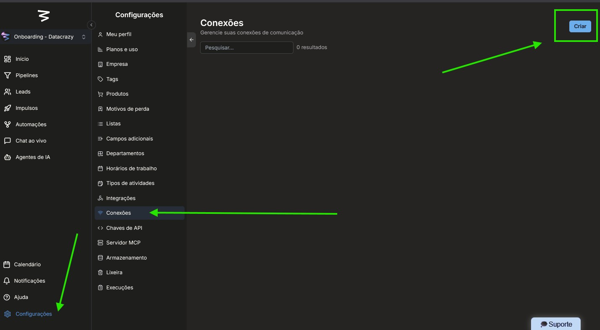
Configurações — Conexões — Criar.
4.2 Selecionando a opção de WhatsApp Cloud Oficial
Nas opções de API para WhatsApp, selecione "WhatsApp Cloud Oficial" para criar uma conexão de API de WhatsApp oficial.
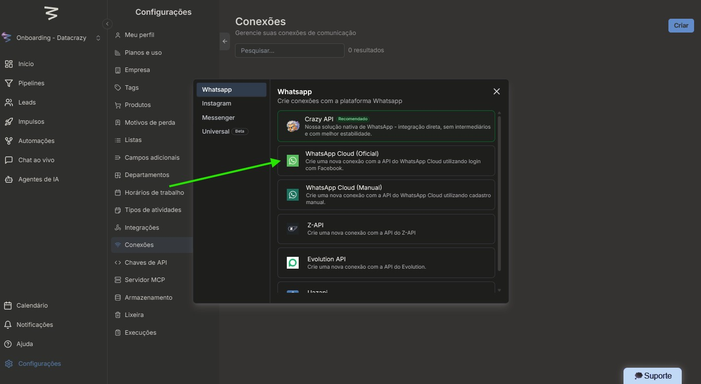
Seleção — WhatsApp Cloud Oficial.
4.3 Preenchendo os dados da conexão
Preencha as informações necessárias:
Nome da conexão;
Código PIN (deve ser o mesmo cadastrado no WhatsApp Business, se não lembrar, pode usar 123456);
Escolha a opção "Conexão em Coexistência (BETA)".
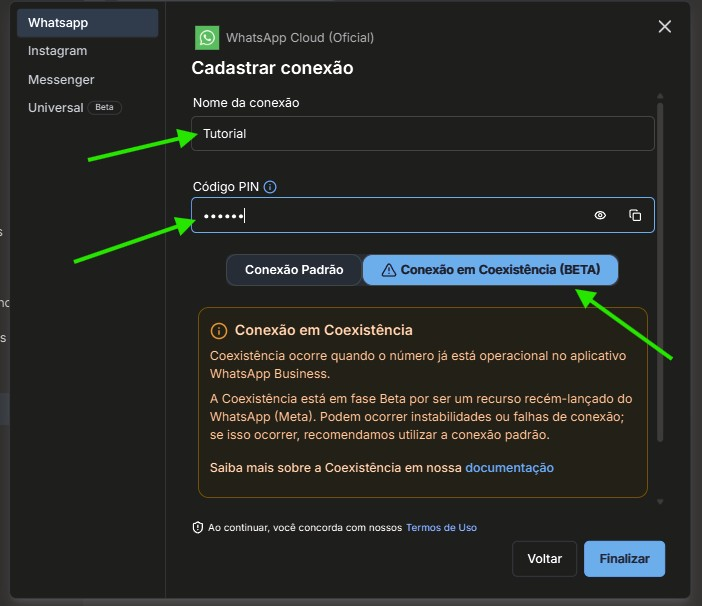
Preenchimento — nome, PIN e modo de conexão.
4.4 Autenticando com Facebook
Clique em "Entrar com Facebook" para iniciar o processo de autenticação.
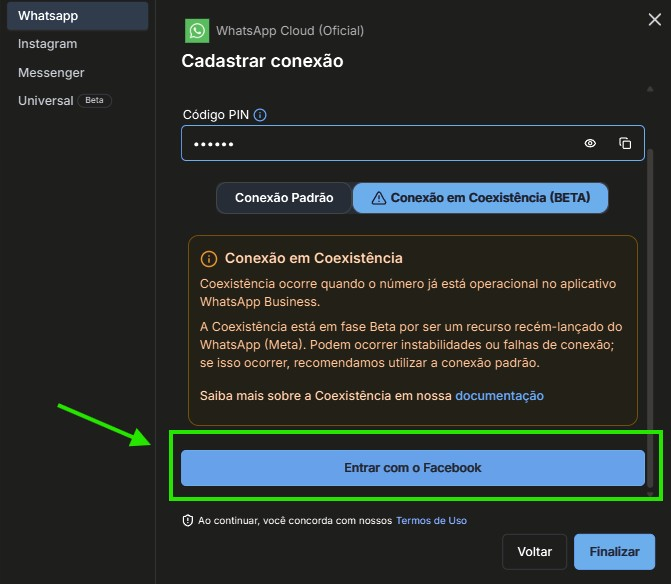
Botão — Entrar com Facebook.
Clique em "Continuar" para prosseguir com a autenticação.
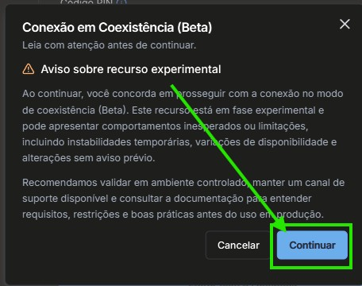
Botão — Continuar.
Neste momento, o CRM puxa o Facebook logado no navegador. É importante que seja o mesmo usuário que tenha a Business Manager (BM) na qual queremos conectar o número.
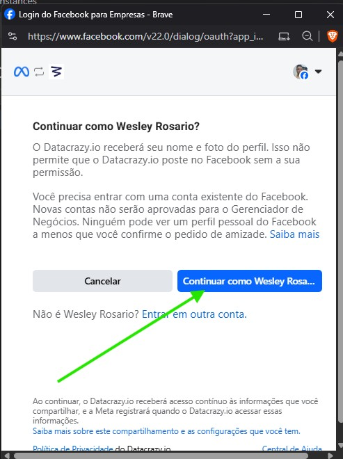
Seleção da conta Facebook com acesso à BM.
5. Configuração na Meta Business Suite
5.1 Iniciando a configuração
Após a autenticação, clique em "Começar" para avançar com a configuração.
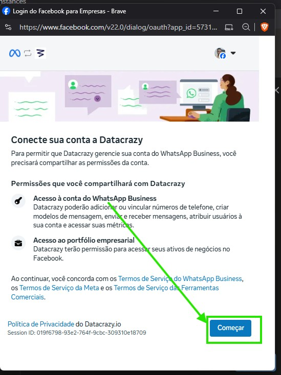
Botão — Começar.
5.2 Selecionando o portfólio empresarial
Nesta etapa, você pode escolher um portfólio empresarial existente ou criar um novo. Após selecionar, clique em "Avançar".
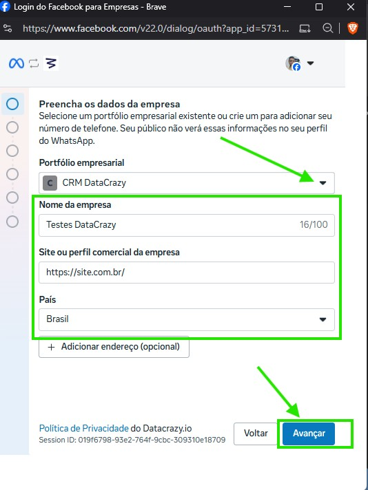
Seleção — portfólio empresarial existente ou novo.
5.3 Conectando o aplicativo WhatsApp Business
Clique em "Conecte seu app WhatsApp Business existente" para prosseguir.
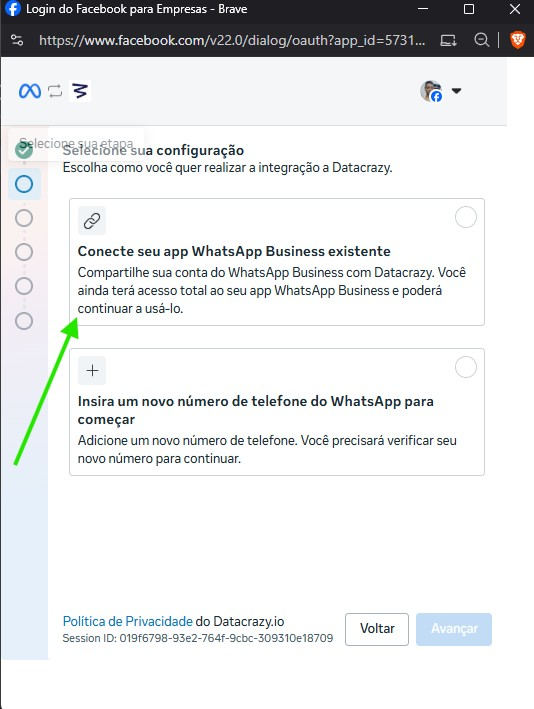
Botão — Conecte seu app WhatsApp Business existente.
Clique em "Avançar" para continuar.
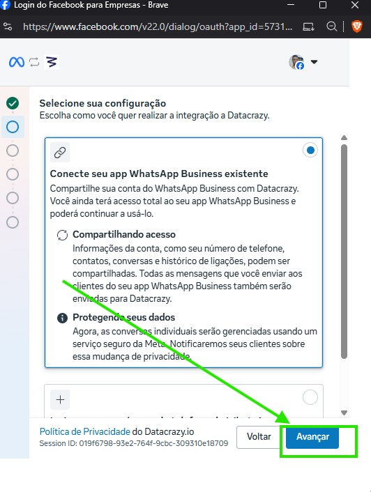
Botão — Avançar.
5.4 Configurando o número de telefone
Preencha as informações do número de telefone e clique em "Avançar".
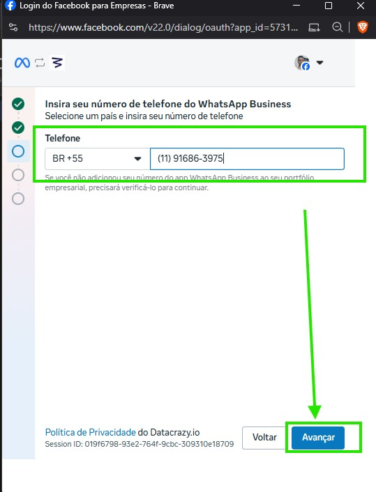
Preenchimento — informações do número de telefone.
5.5 Lendo o QR Code
Agora basta ler o QR Code com o mesmo WhatsApp Business que você colocou o número na etapa anterior.
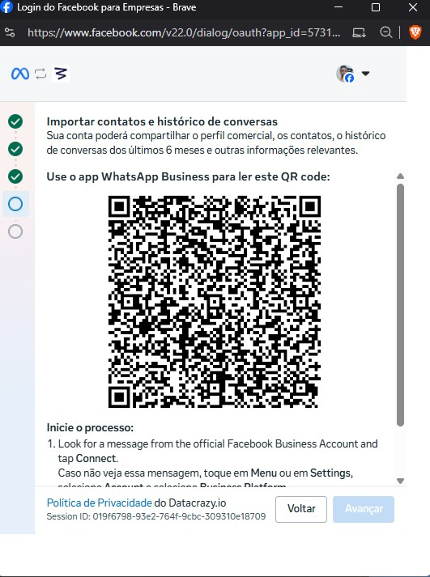
QR Code — leitura com WhatsApp Business.
5.6 Configurando o fuso horário
Escolha o fuso horário "America/São Paulo" e clique em "Avançar".
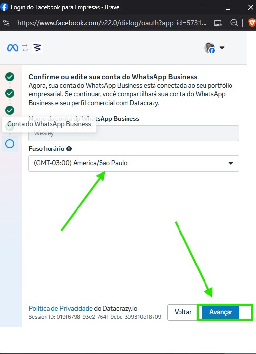
Seleção — fuso horário America/São Paulo.
5.7 Confirmando as informações
Revise as informações e clique para confirmar.
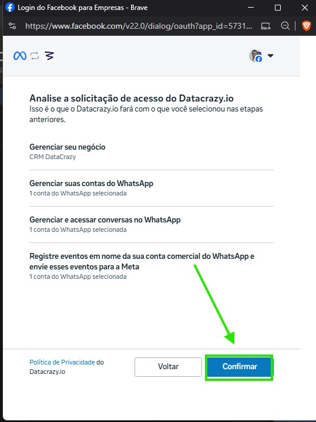
Confirmação — revisão das informações.
5.8 Aguardando a conexão
Aguarde um momento para realizar a conexão.
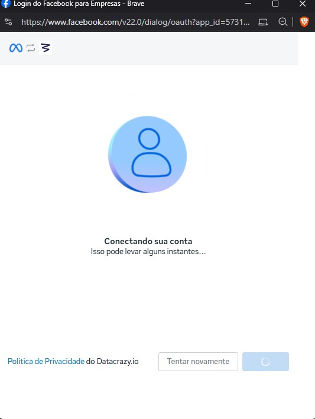
Aguardando — processo de conexão.
5.9 Concluindo a configuração na Meta
Clique em "Concluir" para finalizar a configuração na Meta Business Suite.
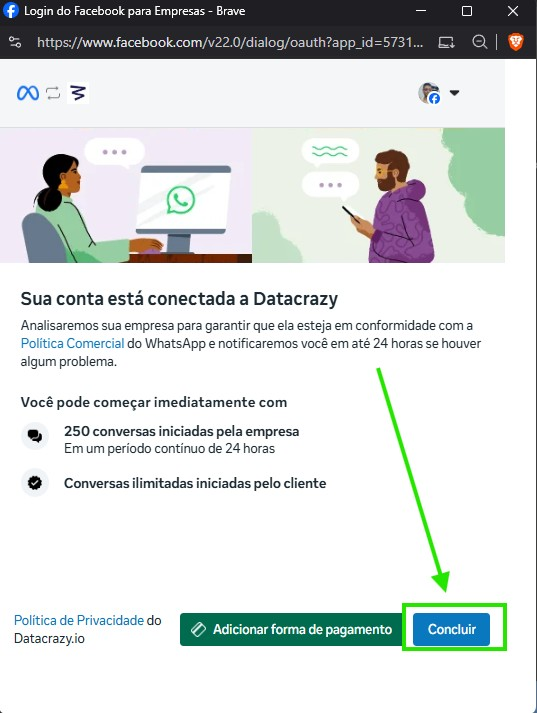
Botão — Concluir.
6. Validação da integração
6.1 Finalizando a conexão no CRM DataCrazy
Voltando ao painel do CRM DataCrazy, clique em "Finalizar" para terminar a conexão.
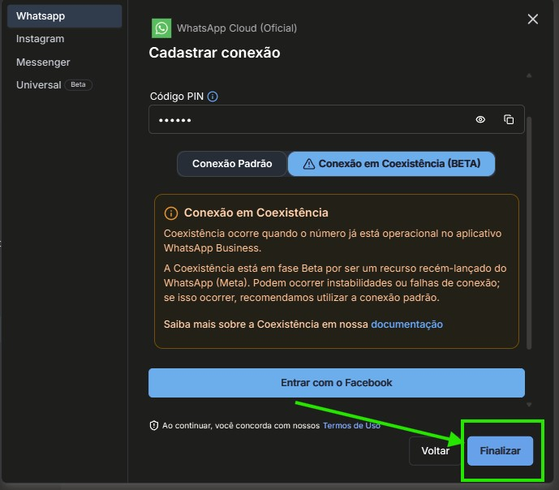
Botão — Finalizar.
Após finalizar, o número estará devidamente conectado!
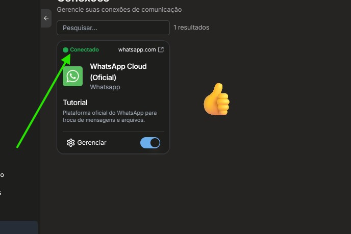
Conexão — concluída com sucesso.
6.2 Verificando na Business Manager
Você pode conferir na Business Manager (BM) se apareceu uma nova WABA (WhatsApp Business Account) com um número de telefone conectado.
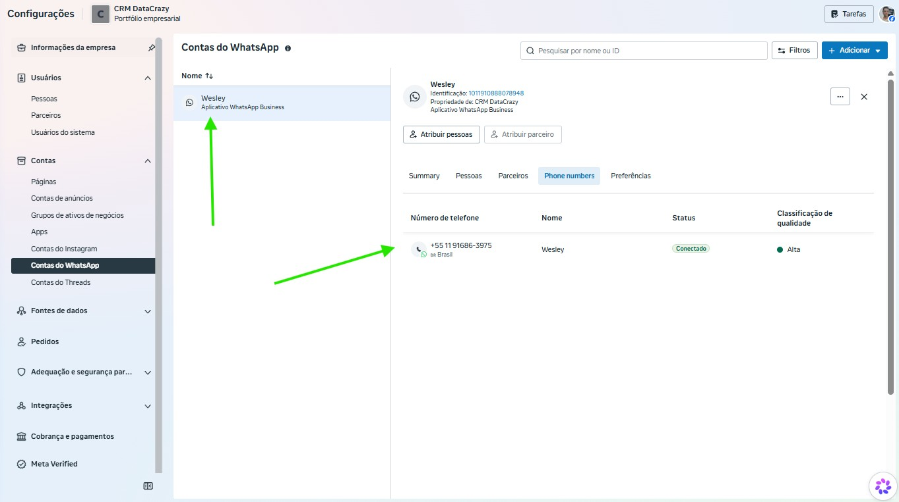
Business Manager — nova WABA com número conectado.
Conexão concluída!
6.3 Testando a integração
Para testar, envie uma mensagem "Oi" para o número conectado e responda pelo CRM DataCrazy através do chat ao vivo.
Verifique se as mensagens estão sendo enviadas e recebidas corretamente tanto pelo WhatsApp quanto pelo CRM DataCrazy.
Certifique-se de que as notificações automáticas estão funcionando conforme configurado.
7. Conclusão
Com os passos acima, a integração entre a API Oficial Coexistente e o CRM DataCrazy está concluída: o número do WhatsApp está conectado e pronto para enviar e receber mensagens diretamente pelo CRM.
Em caso de dúvidas durante o processo, consulte a documentação oficial do WhatsApp Business API ou entre em contato com o suporte do DataCrazy.